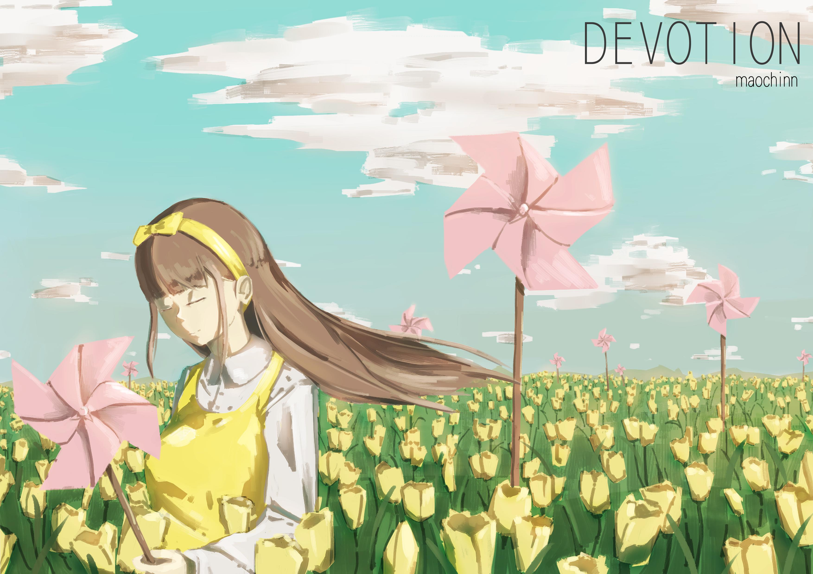

<div id="article_content" class="text-paragraph article_container">總算是畫完了，<div>這次稍微有一些步驟去上色，</div><div>希望在K大色彩課前有幫助。</div><div><br></div><div></div><div><br></div><div>感覺有點過氣才畫完有點尷尬，</div><div>但貌似還沒上架回來OAO</div><div><br></div><div>接下來再上色彩課前要畫爽圖惹(*ﾟ∀ﾟ*)</div><div><br></div><div><br></div><div><br></div><div><br></div><script>
$('article.c-text img').load(function () {
// 表格內圖片大於表格寬時，設為 100%
if ($(this).parents('table').length != 0) {
if ($(this).width() >= $(this).parents('td').width()) {
$(this).width('100%');
} else {
$(this).width($(this).width() + 'px');
}
}
});
</script></div>